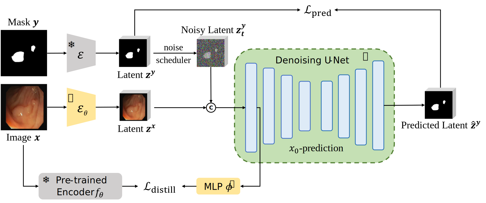
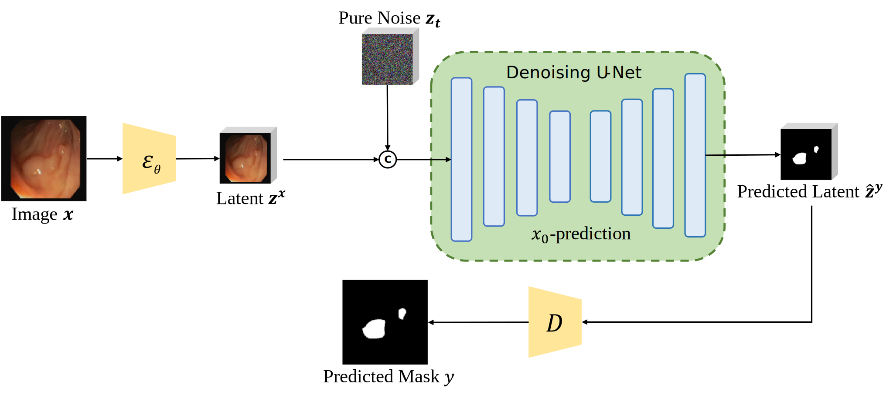
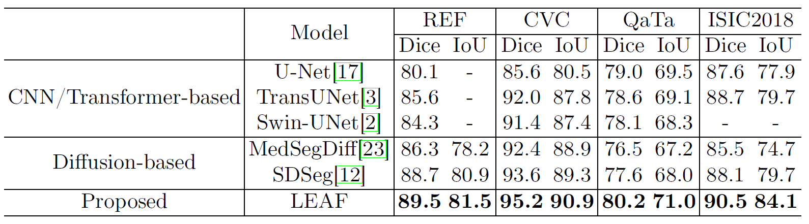
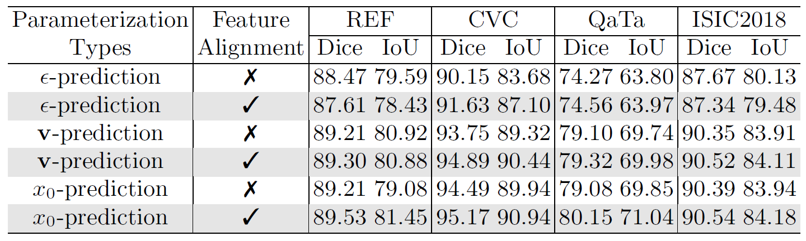

Leveraging the powerful capabilities of diffusion models has yielded quite effective results in medical image segmentation tasks. However, existing methods typically transfer the original training process directly without specific adjustments for segmentation tasks. Furthermore, the commonly used pre-trained diffusion models still have deficiencies in feature extraction.
Based on these considerations, we propose LEAF, a medical image segmentation model grounded in latent diffusion models. During the fine-tuning process, we replace the original noise prediction pattern with a direct prediction of the segmentation map, thereby reducing the variance of segmentation results. We also employ a feature distillation method to align the hidden states of the convolutional layers with the features from a transformer-based vision encoder.
Experimental results demonstrate that our method enhances the performance of the original diffusion model across multiple segmentation datasets for different disease types. Notably, our approach does not alter the model architecture, nor does it increase the number of parameters or computation during the inference phase, making it highly efficient.
After the pre-trained VAE encoder $\mathcal{E}$ encodes the image $\textbf{x}$ and annotation $\textbf{y}$ to the latent space: ①the denoiser U-Net model $f_\theta$ is fine-tuned using $x_0$-prediction; ②we employ single-step diffusion formulation at time-step $t=T$ for better coverage; ③we propose a novel detail preserver, to switch the model either to reconstruct the image or generate the dense prediction via a switcher $s$, ensuring a more fine-grained prediction. The noise $\mathbf{z_T^y}$ in bracket is used for our generative Lotus-G and is omitted for the discriminative Lotus-D.
The standard Gaussian noise $\mathbf{z_T^y}$ and encoded RGB image $\mathbf{z^x}$ are concatenated to form the input. We set $t=T$ and the switcher to $s_y$. The denoiser U-Net model then predicts the latent dense prediction that is further decoded to get the final output. The noise $\mathbf{z_T^y}$ in bracket is used for Lotus-G and omitted for Lotus-D.
Quantitative comparison of LEAF against discriminative and diffusion-based models across four medical image segmentation datasets.
The $x_{0}$-prediction enhanced with feature alignment consistently outperforms all other methods, demonstrating especially large improvements over the standard $ε$-prediction approach.
Please refer to our paper linked above for more technical details :)
@InProceedings{huang2025leaf,
title={LEAF: Latent Diffusion with Efficient Encoder Distillation for Aligned Features in Medical Image Segmentation},
author={Huang, Qilin and Lin, Tianyu and Chen, Zhiguang and Zheng, Fudan},
booktitle={Medical Image Computing and Computer Assisted Intervention -- MICCAI 2025},
year={2025},
publisher={Springer Nature Switzerland},
}